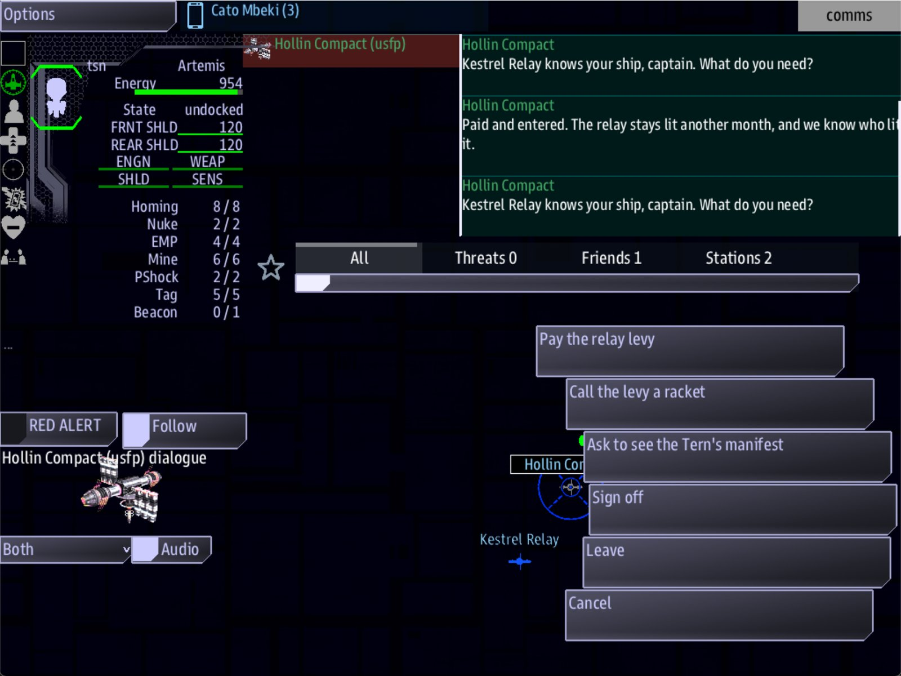

Class 6, Lecture 6 - Reputation arcs¶
What you will have at the end¶
A door in your campaign that only trust can open, and a way for the crew to slam it on themselves. The Hollin Compact keeps the Tern's manifest under seal. A crew the Compact trusts can ask to see it. A crew that sells the Count to the Gleaners finds, next time they are home, that the offer is gone and the work has dried up.
And a ledger in campaign.md: where you expect the crew's standing to be at the end of
each evening, so that you know when each door is meant to open.

After two levies the hail has a fourth answer: "Ask to see the Tern's manifest."You add one section to campaign.md. You add one lead, two answers to hails you already
have, and two short records they lead to.
The video¶
About 5 minutes. Subtitles are available in the player.
Before you start¶
- Your
MyUniversemission as Lecture 5 left it.kestrel_verge.amdmatchesc6-05-campaign-architecture\example\. - Your Hollin Hail and Gleaner Hail from Class 5 Lecture 4. If you split your universe
in Class 5 Lecture 9, they are in the files of your
dialoguefolder. sbs lint MyUniversesaysclean.- The game closed, and the save deleted:
C:\Cosmos\data\missions\common_data\saves\universe_save_the_kestrel_verge_1.yaml.
Words for this lecture:
| Word | Meaning |
|---|---|
| Arc | How one number changes over many evenings, and what that does to the story |
| Door | Something the crew can do only when their standing with a side is on the right side of a line |
| Ledger | Your plan for the number: what you expect it to be, evening by evening |
Step 1 - What moves standing, over weeks¶
In Class 5 Lecture 4 you learned what standing is and moved it in one sitting. A campaign asks a different question: how fast does it move, and can you count on it?
Every row here was measured, on a ship that started at 0 with the Hollin Compact. (The tier 1 row was measured in Class 5 Lecture 4.)
| What the crew does | Standing with Hollin | It costs them | They can do it again |
|---|---|---|---|
| Finish a Hollin job of tier 1 | +5 | The time the job takes | Yes |
| Finish a Hollin job of tier 2 | +10 | The same | Yes |
| Pay the relay levy, in the hail | +20 | 100 credits | Yes, as often as they can pay |
| Sell the Count to the Gleaners, in the hail you write today | 40 falls to 17 | Nothing | Yes |
| Finish a step of the story that carries a deed | 40 rises to 51 | Nothing | No. A step is finished once |
Read the last row twice. It is the only row that happens once. A step of the story can
carry a deed, in its Reward: or on a Standing: line (Class 5 Lecture 7), and the
deed reaches every ship flying when the step is finished. It was measured on The Tern's
Manifest, the lead you write in Step 3, with its reward written
Reward: 200 credits, earns hollin honest 20: the ship's standing with Hollin went from
40 to 51. That deed is not in this lecture's finished file.
So an arc has two tools: a prize and a price. A prize is a deed on a step. It is given once, on the evening you choose. Everything else the crew can do again: jobs can be taken again, and answers can be given again. On those you put a price, in credits or in time, and decide how much of each an evening hands out.
Most of the craft of an arc in this game is the price. The wage is yours to set: evening 1 pays 300 credits and evening 2 pays 350. The price is yours to set: the levy costs 100. So a crew can buy +20 three times a week if they want nothing else, and you know it before they do.
Step 2 - The doors the game already has¶
These are the lines from Class 5 Lecture 4. In a campaign each one is an event you can put a date on.
| Standing with a side | The door |
|---|---|
| 20 | Tier 2 jobs. With a foe: any work at all |
30, with a foe |
A ceasefire is free |
| 50 | Tier 3 jobs |
| 60 | An alliance, with a side the crew has a ceasefire with |
| Every point above 0 | Its jobs pay 1 percent more |
And they close. Measured: a ship at 40 with Hollin was offered Patrol, a tier 2 job. The same ship at 17 was not.
Step 3 - A door that opens¶
Now one of your own. It has three parts: a lead the crew can see from the first evening, an answer in a hail that only a trusted crew is offered, and the record the answer leads to.
The lead. Add it to your Narrative chapter, under the last record.
### [The Tern's Manifest](door_manifest)
---
Scope: shared
Starts when: at once
Done when: signal manifest_seen
Reward: 200 credits
---
The Compact keeps the Tern's manifest under seal, and does not break a seal for strangers. Earn their trust at Kestrel Relay, then ask.
## What the Compact trusts
-  A ship that pays the relay levy
-  A ship that flies their patrols and escorts
-  Not a ship that trades with the Gleaners
This one is not on the spine. It says at once, so it is in the Quest Log from evening
1, beside whichever evening is open. The crew can see the door. Its text tells them what
opens it. That is on purpose: a door nobody knows about is not a reason to do anything.
The keys to the door are a list. The Quest Log draws the text as a page, so the
heading and the three lines under it are drawn as a heading and a bulleted list. A line
that starts with a hyphen and a space is a bullet.  straight after
the hyphen puts a small picture where the dot would be, one line tall: a handshake, a
flag, a crossed circle. The word after icon:// must be one of the game's icon names,
spelled exactly; lint warns about one it does not know. Each line is a row of Step 1's table, in
the crew's words: the levy, the jobs, and the one thing that costs them the door.
The answer. Find ### [Hollin Hail](hollin_hail). Add one line above
- [Sign off](hollin_bye).
| Part | What it means |
|---|---|
if standing >= 40 |
The answer is offered only to a ship whose standing with the speaker's side is 40 or more. Below that, the button is not there. It goes after the key and before the ; |
; signal manifest_seen |
Choosing it sends the word that the lead is waiting for |
Where it leads. Add this record under the other Hollin records.
### [The Manifest](hollin_manifest)
---
Speaker: hollin
---
% Seal broken, and witnessed. Forty-one names, captain. Nine of them are children. Read it here. It does not leave the relay.
Why 40, and not 20 or 60. At 20 the door opens after one levy, on evening 1, and is not a door. At 60 it needs three levies or twelve jobs, and a crew may never get there. At 40 it is two levies, or eight tier 1 jobs, or a mix: a crew that takes one job a week and pays the levy once arrives in the fourth week, near the end of Act One. That is where "nine of them are children" belongs.
Step 4 - A door that closes¶
A door that only opens is a reward. A door that can close is a story. Give the crew a way to spend the Compact's trust.
Find ### [Gleaner Hail](gleaner_hail). Add one line above - [Back away](gleaner_bye).
- [Sell them a copy of the Count](gleaner_sold) ; earns gleaners resourceful 35, earns hollin liar 40
And the record it leads to, under the other Gleaner records.
### [Sold](gleaner_sold)
---
Speaker: gleaners
---
% Now we know which boats you have found, and which you have not. Pleasure, captain. The Compact need never hear of it.
An answer in one side's hail can do a deed with another side. earns hollin liar 40
takes 40 off the ship's honest score with the Compact, whoever the crew is talking to.
Measured, on a ship that had paid the levy twice:
| Before the sale | After | |
|---|---|---|
| Standing with Hollin | 40 | 17 |
| Standing with the Gleaners | 0 | 15 |
| Hollin's greeting | "Kestrel Relay knows your ship, captain." | "Hollin Compact. State your business, captain." |
| Ask to see the Tern's manifest | Offered | Not offered |
| Patrol, the tier 2 job | Offered | Not offered |
| Escort pays | 350 | 292 |
One conversation, and three things at home are different. The crew is not told. They find out when they get back. And 15 with the Gleaners is five short of the 20 at which a foe will deal with them at all, so the sale has to be made twice to buy that. The first one is free.
Step 5 - The ledger¶
You now have the pieces. The ledger is where you decide when they happen. Add it to
campaign.md.
## Standing ledger - Act One
What I expect, if the crew takes one Hollin job a week and pays the levy when they can.
| End of evening | Hollin | Deepwell | Gleaners | A door I expect to open or close |
|---|---|---|---|---|
| 1 | 5 | 0 | 0 | |
| 2 | 30 | 0 | 0 | Hollin tier 2 jobs |
| 3 | 35 | 20 | 0 | Deepwell tier 2 jobs |
| 4 | 45 | 20 | 0 | The Tern's manifest |
| 5 | 50 | 20 | 0 | Hollin tier 3 jobs. Or, if they sold the Count in the yard: Hollin 27, Gleaners 15, and tier 3 is out of reach again |
Prices I have set: the levy, 100 credits for +20. Wages: 300, 350, then 300 an evening.
The numbers in the ledger are a guess. The crew will not follow them. What the ledger is for is the last column: for each door, you have named the evening you want it to open, and you can check that the price makes that possible and not too easy. In Lecture 8 you write the real numbers beside the guesses.
What an arc rests on. Standing is kept in the ship's own record in the save. It is the most valuable thing in the save by the end of an act. A ship that is renamed between evenings keeps it (Lecture 2 measures that). A crew that starts a New Game does not.
Step 6 - Check it¶
Save your files.
If you split your universe in Class 5 Lecture 9, one thing is different for you. It was measured on a split copy of this universe.
- A record you add to a chapter file starts with one hash, like every other record in that file. The records on this page are printed with three, for the main file.
Lint is the same for you: clean. It follows a signal from an answer in one file to
the step that waits for it in another.
Each row below was made on purpose, one change to the finished files, then linted, then played.
Mistakes lint finds
| The mistake | What the game does | What lint says |
|---|---|---|
No ; before the outcome: if standing >= 40 signal manifest_seen |
The answer is never offered, at any standing | A warning: "is not a condition the game can read, so this choice is never offered ... An outcome goes after a ;" (unreadable-guard) |
A trait misspelled in the deed: earns hollin lier 40 |
The Gleaners' respect is earned and the Compact's trust is not lost. Hollin stays at 40. A score is kept under a trait that does not exist | A warning: "earns hollin lier 40 - lier is not a trait a side can value, so no side's standing moves" (earns-unknown-trait) |
The signal's word misspelled on the answer: signal manifest_sen |
The answer is offered at 40 and can be pressed. The lead stays open, and its 200 credits are never paid | Two warnings. On the lead: "waits for the signal manifest_seen, and nothing in the mission sends it" (unfired-signal). On the answer: signal-no-route |
Mistakes lint cannot see
Lint says clean for every one of these.
| The mistake | What the game does |
|---|---|
The word after if misspelled: if standng >= 40 |
The answer is never offered. A crew at 40 sees three answers |
The if part left off |
The answer is offered to everybody, at standing 0. The door is open on evening 1 |
The lead written to start on the signal, Starts when: signal manifest_seen, with a Done when: of its own |
The lead never starts. In an Open Universe mission a step starts at once or revealed, and nothing else |
So check by eye:
- Every guarded answer reads
) if standing >= NUMBER ; outcome, in that order.
Step 7 - Play it¶
- In the
helmwindow, open the Quest Log. The Tern's Manifest is there, beside One of Five. - In the
commswindow, select the Hollin Compact's station and press Hail Hollin Compact. There are three answers. Ask to see the Tern's manifest is not one of them. - Press Pay the relay levy. Hail again and pay again. That is 200 credits and standing 40.
- Hail a third time. The fourth answer is there. Press it. The Compact reads you the
manifest, The Tern's Manifest shows
Done, and 200 credits are paid. - In the Quest Log, engage The Breaking Yard. At the Gleaners' home, select their station, press Hail The Gleaners, then Sell them a copy of the Count.
- Engage Kestrel Relay under Charted Locations. Select the Hollin station. Patrol is gone from its list.
- Hail. The greeting is the cold one, and there are three answers again.
What you need to know about an arc
| Fact | What it means for your story |
|---|---|
| A deed on a step happens once. A job or an answer can be repeated | Award standing on a step when you want to choose the evening. Price everything that repeats, in credits or in work |
| An answer can be given again | A deed with no cost can be pressed until the number is whatever the crew wants. Every answer that earns standing gets a costs |
| The answer that opened a door is still there afterward | The crew can ask for the manifest again and be read it again. The lead pays once. Write the record so that hearing it twice makes sense |
An answer's if is read when the hail opens |
A door closes the moment standing falls below its line. There is no "you had it once" |
| The game does not tell the crew a door has closed | If the story needs them to know, say it in the greeting, with a guarded line |
| Standing belongs to the ship | Each ship has its own. A ship renamed between evenings keeps it |
If something goes wrong¶
| What you see | Likely cause |
|---|---|
| The answer is never offered | Standing is below the number. Or the word after if is not standing |
| The answer is offered to everybody | The if part is missing, or it is after the ; |
| The answer is pressed and the lead stays open | The word after signal is not the word after Done when: signal |
| The Tern's Manifest is not in the Quest Log | It does not say Starts when: at once |
| Selling the Count does not change anything at home | The side's key or the trait after earns is misspelled. Run lint: it names both |
| The standing is 0 this week | New Game was chosen, or the title changed, or two ships were renamed in the same week. One renamed ship keeps its standing |
Exercise¶
- Choose one side in your universe whose trust the campaign turns on.
- Write a door that opens: a lead the crew can see, an answer with
if standing >=, and what they are told. Choose the number by working out which evening it should open. - Write a door that closes: an answer, with another side, that costs the first side's trust. Make it tempting. Nobody presses a button that is only a mistake.
- Write your ledger for Act One. For each door, check the price against the wages.
- Lint and play: open your door, then close it, in one sitting.
- Now do it the slow way once. Delete the save. Play evening 1, pay one levy, take one job, stop. Continue. Is the standing what your ledger says for evening 1?
Checkpoint¶
You are done when all five are true:
campaign.mdhas a ledger for Act One, with a door named against an evening.sbs lint MyUniversesaysclean.- An answer in a hail is offered above a standing you chose, and not below it.
- A deed in one side's hail lowers standing with another side.
- Every answer in your universe that earns standing has a cost.
Next¶
Lecture 7 looks at the acts from the crew's side of the table: who is busy on which evening, and how to stop five evenings in a row from being the same evening.
Further reading¶
- Class 5 Lecture 4, "Reputation": the seven pairs of traits, the average, and the six dials that move the game's own doors.
- Class 5 Lecture 8, "Captains and rivals": standing with one person.
- "Reputation" in the Open Universe reference: every deed that moves standing, on one page.
- Class 2 Lecture 4, "Dialogue, part 2":
ifon an answer.
Download this lecture's finished files (a zip of its example folder).